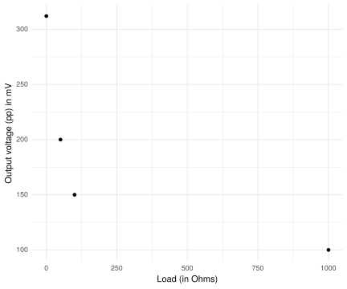

Her kan jeg skrive på en test av rmarkdown. \[y=x^2.\] Jeg kan laste inn data:
df <- tribble(
~Rload, ~Vout_pp ,
0, 312,
50, 200,
100, 150,
1000, 100
)Og generere plot:
df %>% ggplot(aes(x=Rload, y=Vout_pp)) +
geom_point() +
theme_minimal() +
labs(x="Load (in Ohms)", y="Output voltage (pp) in mV")
Kanskje klarer jeg også å få inn bilder.

Picture of first working version on the bench